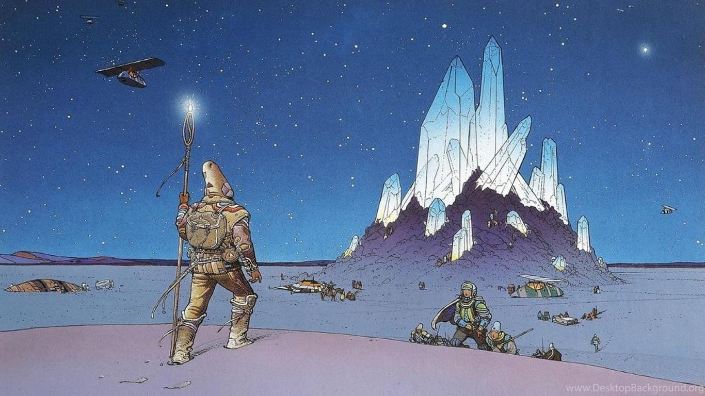

In the beginning…

Figure 1: Moebius art.
Hello, friend.
This page was built through an org-mode setup for blogging. The styling used in this page is available at Github.
The reasoning behind using emacs and org for this task is the same as in the never-ending search for better processes. Also, the idea of applying recursivity to one's tools is a welcomed one.
void better_tools(t *tool) { return better_tools(t); }
This is intended as a collection of personal, yet technical, reports over a variety of subjects concerning computer theory, practical experiences, system administration, low level glimpses and mathematics (or whatever spikes an interest in me).
What's missing here
DONE Entry point
TODO A proper home page
TODO A post about the org publish pipeline
- An overview of the org setup.
- Preamble and Postamble fiddling, referencing this post.
- Sitemap custom function.
- Extracting data from a parsed org tree.
TODO A post about the writing tool
- A full build log of the mech kbd project.
- How the matrix works.
- The case, the circuit, the planning (or lack of).
- Handwiring troubleshoot.
- A simple walk trough of QMK and the target files.
- Conclusion and future projects.
DONE Simple style sheet base
DONE Improved styling
DONE An 'About' page
DONE A better structured org publish pipeline
Org-mode is amazing. Please read its manual.
About the publish pipeline, the setup is as simple as in this "complex" example.
DONE The correct export pieces, i.e., .orgs, assets, style sheets, etc.
DONE The sitemap hacking
Auto sitemapping is yet another amazing org feature. Here's a very resourceful post about some good practical tweaks one can do to his org publish pipeline.
DONE Reusable header/navigation
DONE Reusable footer
DONE Tags and styling
TODO Improved responsive layout
This probably won't get done for a while. It's going to take a few posts to touch every element of an HTML file produced by the org export.